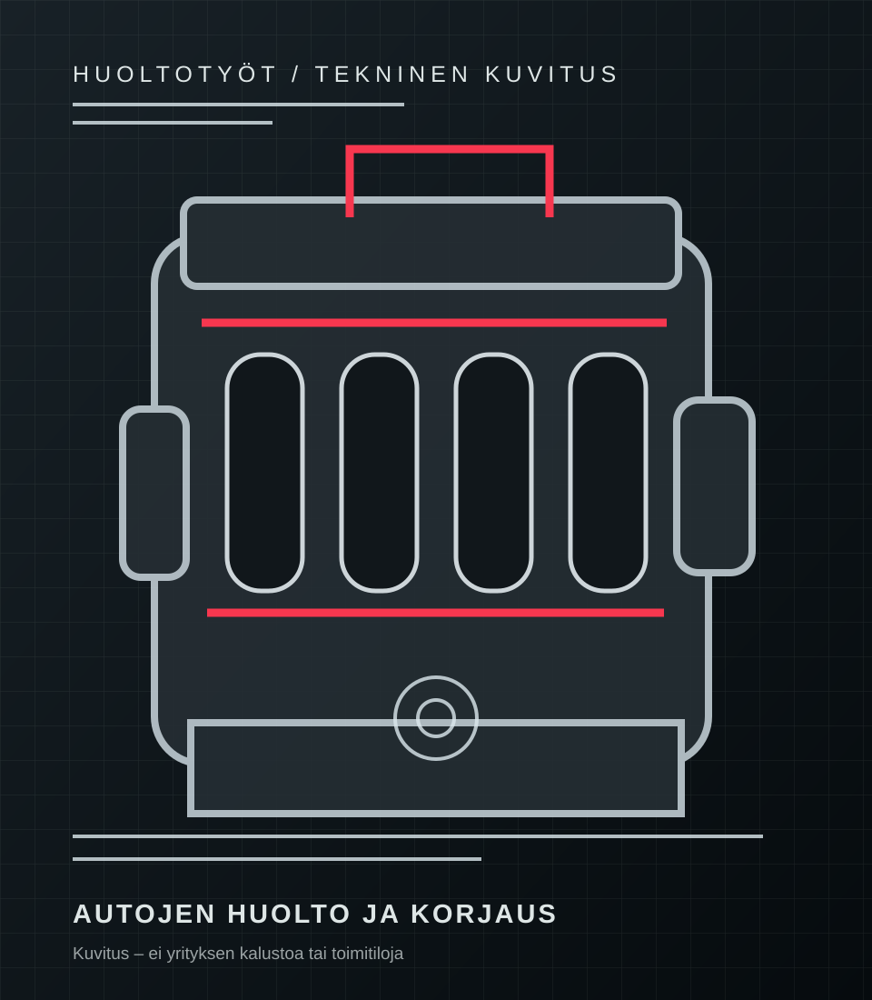

AUTOKORJAAMO KERAVALLA
Luotettavaa palvelua takuulla.
Autohuolto,
johon voit
luottaa.
S. Räsäsen Autohuolto Oy palvelee Keravalla. Huollamme ja korjaamme kaikkia automerkkejä sekä henkilö- ja matkailuautoja jo 20 vuoden kokemuksella.
Öljynvaihto ilman ajanvaraustaHeisitie 4, Kerava
20 vuotta
Kokemusta autojen huolloista ja korjauksista
Kaikki merkit
Henkilöautot ja matkailuautot
Autofit
Kuulumme valtakunnalliseen korjaamoketjuun
PALVELUMME
Huoltoasiat
hoituvat täällä.
Olipa kyse auton normaalista huollosta, korjauksesta tai nopeasta öljynvaihdosta, autamme löytämään sopivan ratkaisun.
Kaikki palvelut
KUVITUSKUVA · Ei tämän yrityksen henkilöstöä tai toimitiloja.
KORJAAMOMME
Keravalla.
Aidon työn äärellä.
Räsäsen Autohuolto on Autofit-ketjun jäsen. Ketjun osana huolto- ja korjaustyöt tehdään ammattitaidolla, ja yrityksen mukaan työlle sekä käytettäville alkuperäisvaraosille annetaan takuu.
- ✓ Merkkiriippumaton korjaamo
- ✓ Kokemusta henkilö- ja matkailuautoista
- ✓ Autofit-ketjun tuki
KÄYNNISTÄ HUOLTOASIA
Olisiko aika
huoltaa autosi?
Kerro autostasi ja huoltotarpeestasi. Saat yhteyden suoraan Keravan korjaamoon.